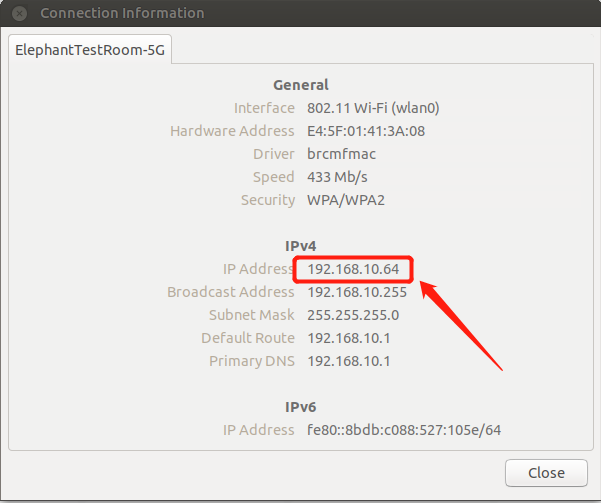
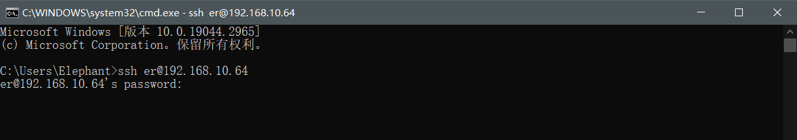
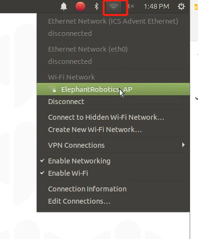
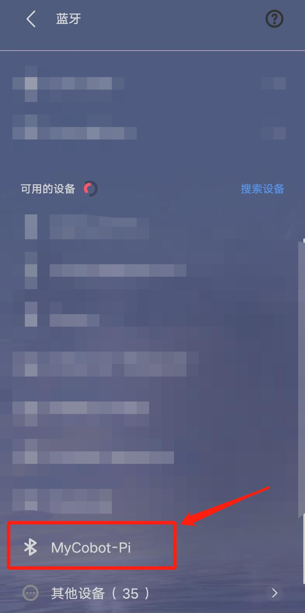

系统基础功能说明
机器人系统介绍
系统简介
Ubuntu是个人桌面操作系统中使用最广泛的linux操作系统。对于初学者来说，熟悉linux环境或一些嵌入式硬件操作系统是一个很好的选择。ubuntu官方网站还发布了树莓派专用操作系统。

系统功能简介
myStudio：固件烧录软件，用于更新和烧录新版本固件
myBlockly：图形化编程软件，可直接通过拖拽积木组成运行代码，控制机械臂
ROS1 Shell：直接进入编译好的ROS1环境，可直接输入对应指令，运行对应的ROS1代
ROS2 Shell：直接进入编译好的ROS2环境，可直接输入对应指令，运行对应的可直接运行ROS2代码
Github-ElephantRobotics：大象机器人官方开源代码仓库
Home-ElephantRobotics：大象机器人官网主页
UserManual - CN/EN：机器使用手册，包含所有关于机械臂控制的内容
WiFi_ON/OFF：WiFi开关，点击即可打开/关闭WiFi功能
HotSpot_ON/OFF：热点开关，点击即可打开/关闭热点功能，打开后热点名称为ElephantRobotics_AP_XXXX
Language Support：系统语言设置，点击即可进入系统语言设置界面
系统密码说明
开机账户密码 & VNC 连接密码 & SSH 连接密码 & 管理员账户密码
- 统一为：Elephant
如何定义新的密码
更改账户密码
使用快捷键
ctrl + alt + T打开终端输入
passwd进行账户密码修改输入新密码两次即可
更改VNC连接密码
使用快捷键
ctrl + alt + T打开终端输入
vncpasswd进行账户密码修改输入新密码两次即可
更改SSH连接密码
- SSH远程连接输入的就是管理员账户密码，无需单独修改
更改管理员账户密码
使用快捷键
ctrl + alt + T打开终端输入
sudo passwd进行账户密码修改输入新密码两次即可
VNC
VNC 功能介绍
- 是一款远程控制的软件，一般用于远程解决电脑故障或软件调试
VNC端口说明
- 机械臂与PC连接在同一WiFi下，机械臂IP地址即为端口
连接VNC
连接的方式有两种，第一种方式需要外接显示器对系统进行一些操作，具体步骤如下：
先点击 "Disconnect" 关闭默认热点

点击 "Enable Wi-Fi" ， 等待显示当前可用的WiFi

单击需要连接的WiFi，输入WiFi密码

连接成功后，点击"Connection Information"，查询机械臂当前IP地址

如示例所示，“192.168.10.64”即为机械臂当前IP地址

将您的电脑和机械臂的WiFi连接到同一个WiFi下，打开VNC viewer软件，输入这个IP地址（以上方的案例举例则为输入192.168.10.64）然后回车，密码是Elephant，用户名默认是不填的，成功连接示例如下：
.png)
第二种方式不需要连接显示屏，直接用PC连接Ubuntu系统热点进行远程控制，但是此连接方式并不具备网络冲浪的功能，只能远程操控机械臂系统，具体步骤如下：
PC选择连接Ubuntu系统热点ElephantRobotics_AP_XXXX，输入密码Elephant
.png)
打开VNC viewer软件，输入这个IP地址 10.42.0.1 ，然后回车，密码是Elephant，用户名默认是不填的，成功连接示例如下：
.png)
如何提高流畅性
- 远程连接流畅性取决于所连WiFi的流畅性，建议连接稳定的WiFi进行远程控制
SSH
SSH 功能介绍
- 简单说，SSH是一种网络协议，用于计算机之间的加密登录。如果一个用户从本地计算机，使用SSH协议登录另一台远程计算机，我们就可以认为，这种登录是安全的，即使被中途截获，密码也不会泄露。
SSH端口说明
- 默认端口22，无需更改
SSH 首次连接
按照 2.3 VNC 确认机械臂IP地址
在个人电脑按下
win + R打开运行界面，在输入框输入cmd
- 输入完毕后点击确认，即可打开shell界面

- 输入
ssh er@IP地址，然后回车（IP地址以机械臂显示为主，图中仅为示例）  - 输入密码
Elephant
- 如上图所示，已成功远程ssh连接机械臂
如何提高流畅性
- 远程连接流畅性取决于所连WiFi的流畅性，建议连接稳定的WiFi进行远程控制
网络配置
默认AP的使用
- 在机械臂开机后，系统会默认连接到树莓派自身发出的热点，热点名称为ElephantRobotics_AP_XXXX，此时IP地址为10.42.0.1，此热点并不具备网络冲浪的功能，并且传输的速率与信息量有限，所以在最终成像时会有部分的失真和色差，并且通信传输也会有延迟，属于正常现象。
连接WLAN
先点击 "Disconnect" 关闭默认热点
点击 "Enable Wi-Fi" ， 等待显示当前可用的WiFi

单击需要连接的WiFi，输入WiFi密码

连接成功后，点击"Connection Information"，查询机械臂当前IP地址

如示例所示，“192.168.10.64”即为机械臂当前IP地址

连接有线网络
机械臂打开后，默认连接到系统配置的热点: ElephantRobotics_AP_XXXX

点击“Disconnect”，断开默认热点连接
.PNG)
将网线连接到机械臂的网络端口

将普通互联网网线连接到机械臂的网络端口

如何设定默认IP地址
使用快捷键
ctrl + alt + T打开终端，输入sudo vim /etc/netplan/01-network-manager-all.yaml，修改01-network-manager-all.yaml文件为如下内容
修改完成后，输入
sudo netplan apply使配置生效如何自动分配IP地址
系统连上WiFi就是自动分配IP地址，无需进行任何设置，如果想从固定IP地址改成自动分配IP地址，修改/etc/netplan/01-network-manager-all.yaml文件为如下内容即可

修改完成后，输入
sudo netplan apply使配置生效
蓝牙配置
机械臂系统蓝牙默认打开，直接用PC/手机，打开蓝牙搜索即可搜索到，如图所示，蓝牙默认名称为MyCobot-Pi

PC/手机向机械臂传输文件
选择想要进行蓝牙传输的文件，使用蓝牙传输
在机械臂系统内操作，选择接收文件

等待蓝牙传输完成

在 /home/er/Downloads 文件夹即可看到蓝牙传输完成的文件

机械臂系统向PC/手机传输文件
- 系统内点击蓝牙图标，在下拉显示框中选择 Send Files to Device

- 选择PC/手机


- 在PC/手机上，允许接收文件即可实现从机械臂向手机传输信息

语言配置
如何切换语言
点击桌面Language Support进入语言切换界面，拖拽想要更换的语言到最上方，重启系统即可

如何下载语言
点击桌面Language Support进入语言切换界面，选择语言，点击下载，输入密码Elephant

系统分辨率切换
点击屏幕右上角图标，选择 System Settings，进入系统控制面板


选择 Display，进入分辨率选择页面

切换选择分辨率，点击 Apply 查看显示效果，如果符合，则点击 Keep this Configuration


python
机器人系统python简介
系统内置安装Python3.8 ，无需自行安装
已按照Python依赖：
| Package | Version |
|---|---|
| pymycobot | 3.0.9 |
| pyserial | 3.5 |
| numpy | 1.23.5 |
| opencv-contrib-python | 4.7.0.72 |
| rospkg | 1.4.0 |
| rospkg-modules | 1.4.0 |
初次使用python
可在输入框中尝试此代码：
print ("Hello World!")
运行机器人案例代码
具体案例代码可查看Python章节，直接将案例中代码复制下来即可使用